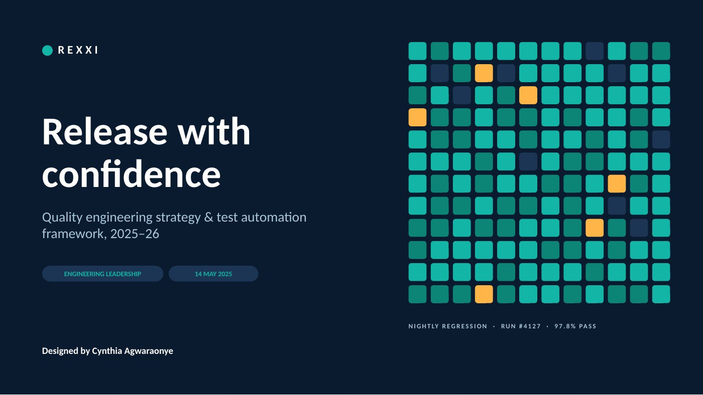
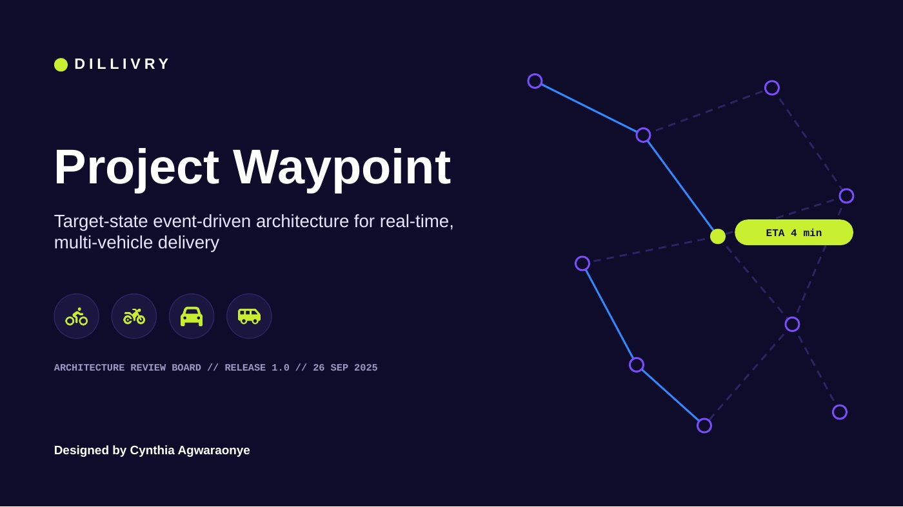
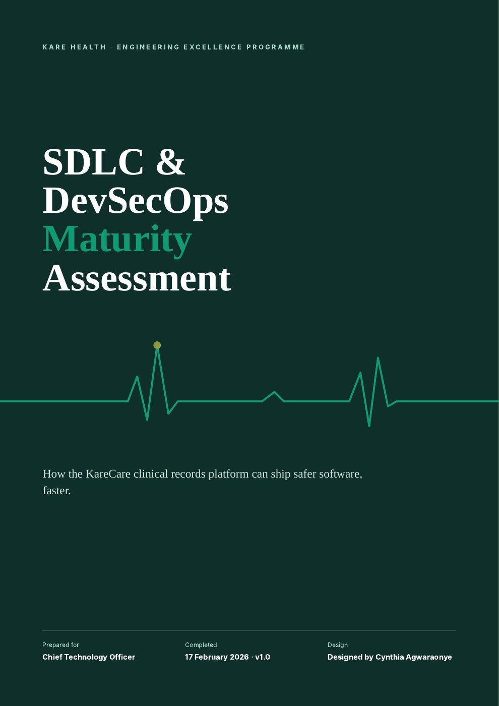
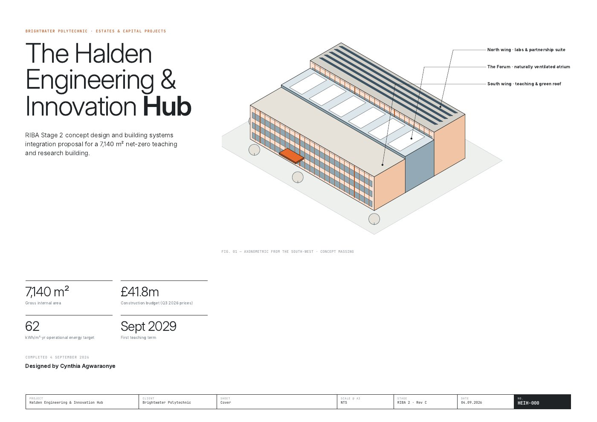

Presentations, reports and architectural documents for QA, software architecture, SDLC and the built environment. Each project shows the deck or document, the visual identity built for it, and the technical diagrams that carry the story.
Quality engineering strategy and test automation framework for an engineering leadership audience. Dashboard-style KPI tiles, a test-run heatmap motif, testing lifecycle and CI/CD gate diagrams, a tool evaluation matrix and a risk matrix.

Target-state event-driven architecture for a multi-vehicle delivery platform, prepared for an architecture review board. Domain map, dispatch data-flow diagram, UML sequence diagram with latency budget, cloud deployment topology and a risk register.

Editorial report assessing a regulated health-software delivery lifecycle. Maturity radar and comparison charts, DORA benchmark bands, a findings heatmap, a value stream map, and an impact vs effort matrix for the recommendations.

RIBA Stage 2 concept design and building systems integration proposal set out as drawing sheets. Axonometric, site plan, scaled floor plan, environmental section, SysML systems diagram and an energy plant schematic.
